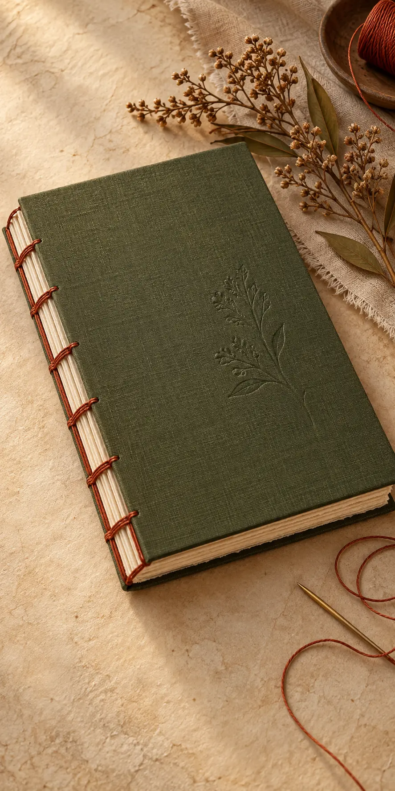
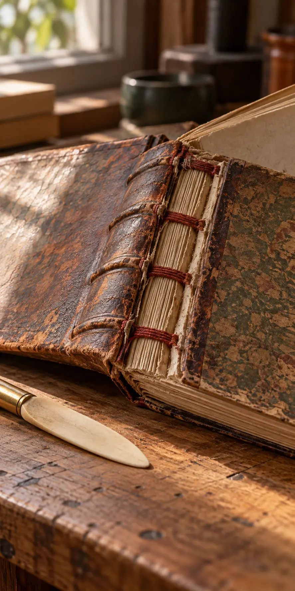
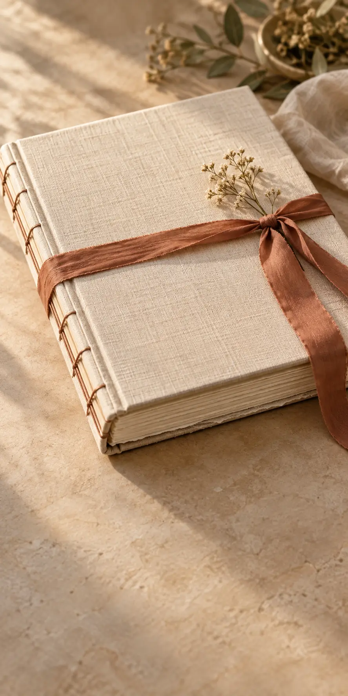
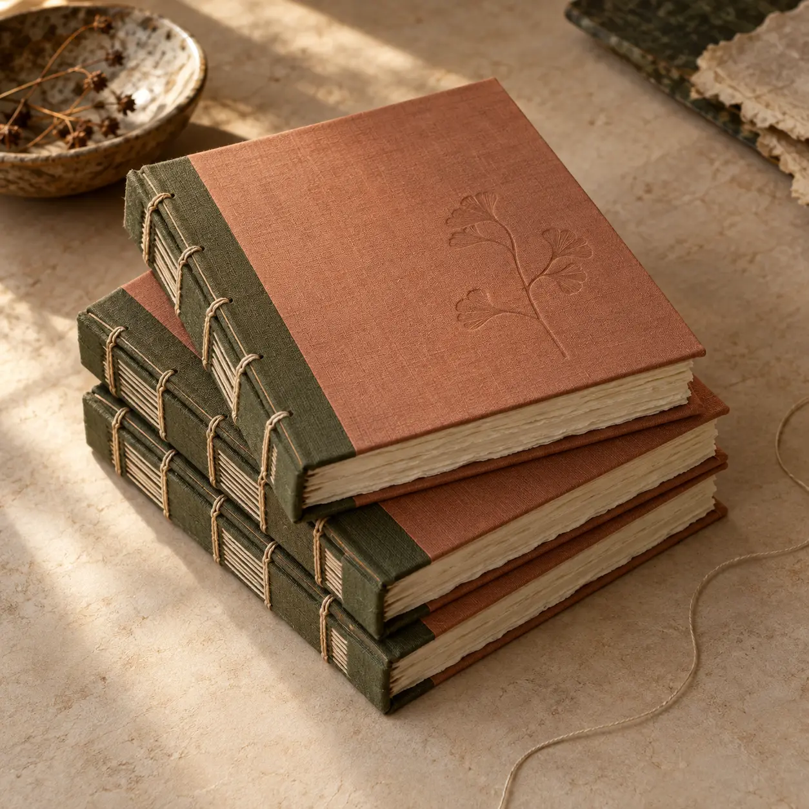

Livros que se seguram nas mãos por gerações.
Costuramos, colamos e prensamos à mão, do caderno de uso diário à restauração de exemplares de família. Cada peça passa pelas mesmas quatro etapas que aprendemos há trinta anos.
Ver serviços-
Linho belga, cor terracota
Capa dura, acabamento fosco
-
Percalux verde-musgo
Resistente à umidade
-
Papel de guarda marmorizado
Feito à mão, padrão único
O ofício, em quatro etapas
Cada livro passa pela mesma sequência de trabalho, do primeiro caderno de páginas soltas até a prensa final.
-
01
Dobra
As folhas são dobradas em cadernos e organizadas na ordem de leitura.
-
02
Costura
Os cadernos são costurados manualmente com fio encerado, ponto a ponto.
-
03
Colagem
O lombo recebe cola natural, que dá firmeza sem engessar o papel.
-
04
Prensagem
O volume descansa na prensa por 24h para fixar a forma definitiva.
Peças recentes




Levei o diário do meu avô, que estava se desfazendo, e voltou como se tivesse sido feito ontem, mas ainda com a capa original.